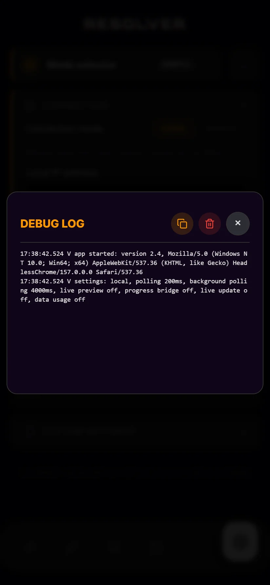
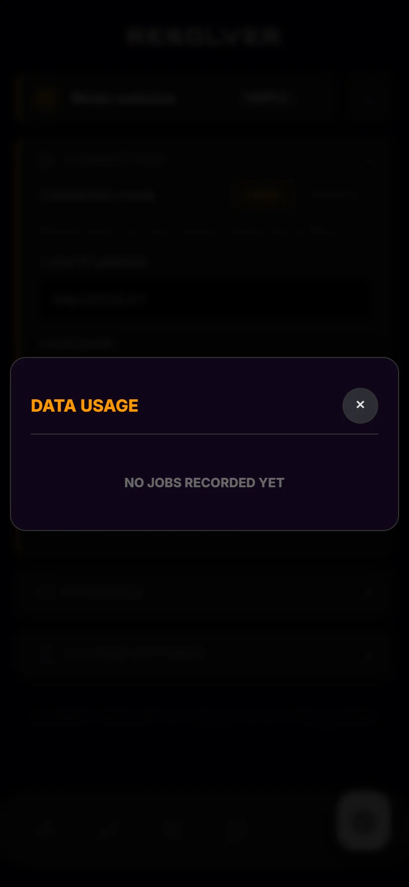

Docs / Help
Troubleshooting & FAQ
Something not working? Type a word from the problem below; the matching answers open.
Questions and answers
ConnectINITIALIZE ENGINE says FAILED
- Is Forge running on the PC, started with
--listen --api? See Set up Forge. - Are phone and PC on the same Wi-Fi? Mobile data or a guest network can’t reach the PC.
- Is the IP right? It’s the PC’s IPv4 address (like
192.168.1.20), never127.0.0.1. It can change after a router restart. - Open
http://YOUR-IP:7860/docsin the phone’s browser. If that fails too, Windows Firewall is likely blocking port 7860: allow Python on private networks.
More in Connection problems.
ConnectIt connects at home but not when I’m out
At home the app uses your local address, which doesn’t work outside your network. Use REMOTE mode with a tunnel (ngrok, Cloudflare): Using Resolver away from home.
ConnectThe lists (checkpoints, LoRAs, samplers) are empty
They come from Forge when you connect. Tap INITIALIZE ENGINE again once Forge has fully loaded. For LoRAs added since, use the refresh in the LoRA window.
Connect“The connection to the server timed out (error 524)”
A tunnel (Cloudflare especially) gave up waiting for a long job; the image was likely made but couldn’t be collected. Look in Forge’s output folder, use fewer steps or smaller batches over the tunnel, or a tunnel without that limit.
Generate“Please select a model first.”
The tab has no checkpoint chosen. Open Active Checkpoint on that tab and pick one. Each model tab keeps its own.
Generate“Forge is busy with another job”
Forge is already generating, perhaps from its own web page or another device. Wait for it to finish, or stop it there. Resolver never sends a second job on top.
GenerateOut of memory, or very slow
- Tap the bin beside GENERATE (Clear VRAM) to unload models, then try again.
- Lower the size or Batch size, or turn off Hi-Res Fix.
- Set Config → Generation → VRAM profile to Low.
- Turn on Show low bits and Show Never OOM in Config → Models and use them. See Modules, memory and speed.
- Magic Prompt’s model uses VRAM too: use a smaller one or unload it.
GenerateImages come out grey, noisy or burnt
Usually settings that don’t suit the checkpoint: check its recommended steps, CFG and sampler (Lightning / Turbo models need few steps and CFG 1–2). Set them once in the Checkpoint Manager so they apply whenever you pick it. A LoRA for another model family (SD 1.5 on SDXL) also breaks images.
Generate“Load a reference image for ControlNET, or disable it.”
A ControlNet unit is on without a picture. Add one in the ControlNet section (or send one from the viewer: Send → ControlNet), or switch the unit off.
GenerateA LoRA has no effect
Check that its tag is in the prompt (<lora:name:0.8>), that it was made for this model family, and that its trigger words are there. In Analyze, a LoRA marked “not installed” isn’t on your PC.
BackgroundGeneration stops when the screen is off
- Allow background mode: Config → System Settings → IGNORE BATTERY OPTIMIZATIONS.
- In the phone’s own battery settings, set Resolver to Unrestricted.
- Allow its notifications: the progress notification is what keeps it running.
BackgroundNo “Generation Complete” notification
It only comes while the app is in the background, and needs notifications allowed for Resolver (Android 13+ asks). Check the phone hasn’t silenced the Generation Complete channel.
BackgroundI closed the app and Forge kept generating
That’s the default: Forge finishes what it was given. Turn on Config → Generation → Abort on close or disconnect to stop it when the app is swiped away.
ImagesMy older images disappeared from History
History keeps the newest 30 by default (Gallery cache limit). Raise it, star images you want to keep (favorites are never removed), and keep Auto-delete warning on so you’re asked first. See How many images are kept.
ImagesWhere are saved images on the phone?
Auto-Save and Download put them in the phone’s storage, named like bojro_261117_1234567.png. Your gallery app shows them. Backups go to Documents.
ImagesAnalyze shows no prompt for an image
The file has no settings in it: many sites and chat apps strip them. Images made by Forge keep them (PNG text, or EXIF in JPEG / WEBP). After upscaling, tick Copy Metadata from Source.
ImagesThe live preview doesn’t show
Turn on Preview beside GENERATE. On mobile data it’s off unless Config → Live Preview → Allow on mobile data is on. Try another Preview method (TAESD looks best).
PromptsA wildcard is sent as __name__ text
Wildcards are off (Config → Prompts → Wildcards), or no wildcard has that name: TRY and CHECK in the Wildcards window show why. With auto-formatting on, unknown wildcards are removed instead.
PromptsSomething I didn’t write keeps appearing
A LoRA’s trigger words, a style, a default prompt or a wildcard may add it. To keep it out regardless, write ~word in the negative. See The negative box.
PromptsMy bracket is red
It has no partner: a ( without ) or the other way round. Forge would read the rest of the prompt differently. See the colors.
Magic PromptLINK fails, or the model list is empty
Check the model server runs and accepts network connections (LM Studio: Serve on Local Network), that a model is loaded, and the LLM port in Config (1234 for LM Studio, 11434 for Ollama).
Magic PromptDescribe says “This model can’t read images”
Describe needs a vision model (Qwen2.5-VL, Gemma 3, LLaVA…). Pick one in DESCRIBE’s own settings.
AppA setting from these docs isn’t in my Config
Config starts in Simple mode, which shows only Connection, Dock style, Light mode, Visible tabs and System Settings. Settings marked Advanced Control show once you switch it on: tap the Mode selector bar at the top of Config and hold the CPU until its bar fills. Config’s search also only finds what the current mode shows. Hidden settings keep working as they are set. See Simple and Advanced Control.
AppHow do updates work?
The app checks for updates when it starts (and with Config → System Settings → UPDATE CHECK). Update Available shows what’s new: INSTALL UPDATE, LATER or SKIP this version. Most updates install inside the app; a few need a new APK, which opens the download page. Your images and settings are kept. Turn the notices off with Update notifications.
AppI changed a lot of settings and want the defaults back
Config → System Settings → RESET APP CONFIGURATION. Your content is kept. See Reset.
AppMoving to a new phone
BACK UP on the old phone (tick History Favorites if you want those images), copy the file over, install Resolver, then RESTORE. See Backup & Restore.
AppDoes Resolver send my prompts or images anywhere?
Your prompts and images go only to your own servers: Forge, ComfyUI, your model server and the Dev Power app, at the addresses you set. Apart from those, the app reads GitHub for update checks and the notice board, Civitai only when you search or import wildcards there (and the Bungles library when you tap CHECK), and Hugging Face once for Character Select’s data when you turn SAAC on. Everything else stays on the phone.
Diagnostics
Two tools in Config → Diagnostics help find what’s going on:
- Debug log
- Records jobs, network calls and background events with times. DEBUG LOG shows it; copies it to share in a bug report, clears it. V / H mark whether the app was in view or hidden. It’s kept in memory only, so it starts empty each time the app opens.
- Data usage tracker
- Roughly how much data each Generate, queue and Upscale job used (request and reply bodies; not headers or compression). DATA USAGE lists the jobs; Floating data counter keeps a total on screen.
Turn on the Debug log, make the problem happen, copy the log, and open an issue on GitHub with it and your Android and Forge versions.

